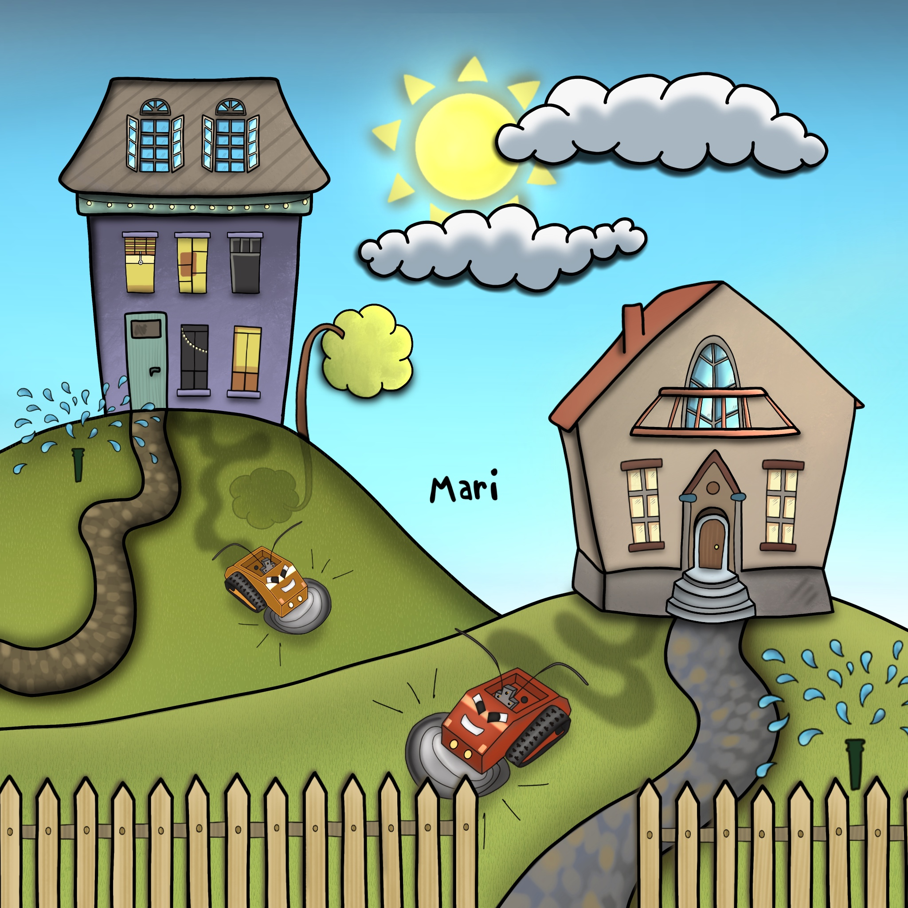

Economics of Horticulture
A lot of people have some land around their house or apartment. Current trend is green carpet, which is cut each time the grass is longer than 5 cm. There are no big trees, because in the autumn, the leaves fall and we have to harvest them. It is definitely a lot of work and waste of time for us.The result of that is parched desert and it needs to be watered every night, because nature can not help herself.
